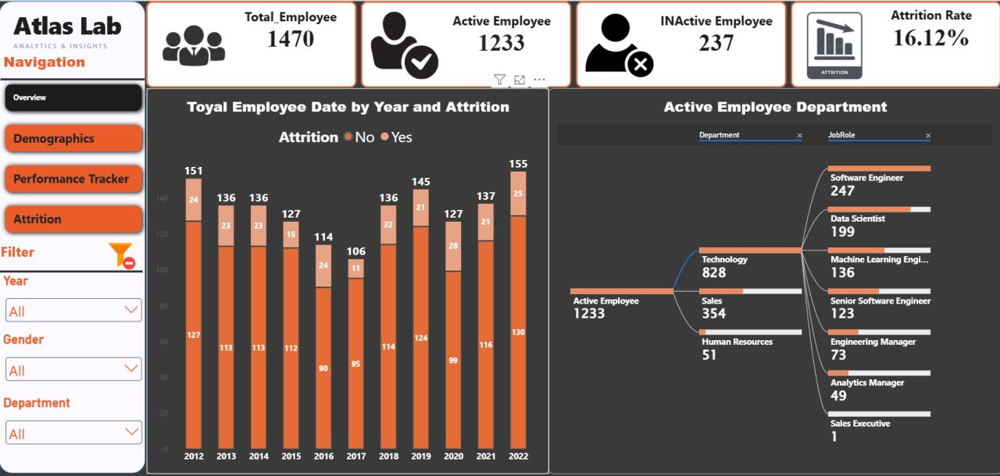

Atlas Lab — HR Analytics & Attrition Dashboard
A 4-page HR analytics dashboard analyzing workforce data for 1,470 employees, focused on understanding the core organizational factors behind employee attrition.

Expand Lightbox ⤢4 Detailed Analytical Pages
Comprehensive structure covering Overview, Demographics, Performance Tracker, and Attrition analysis.
Star-Schema Model
Employee dimension, Performance Rating fact table, Satisfaction & Rating
dimensions, Education dimension, and custom DAX measures using
USERELATIONSHIP().
Core Measures
Calculated Attrition Count, Attrition Rate, Average Attrition Age, and salary comparisons between active and departed staff.
"What actually drives attrition?"
Employees who left showed a noticeably lower average salary than employees who stayed, creating a clear signal worth investigating alongside satisfaction data.